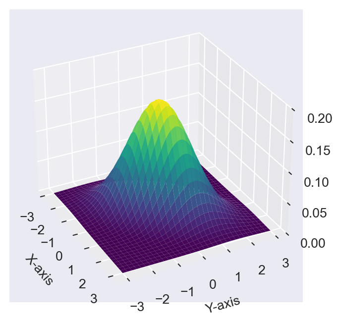
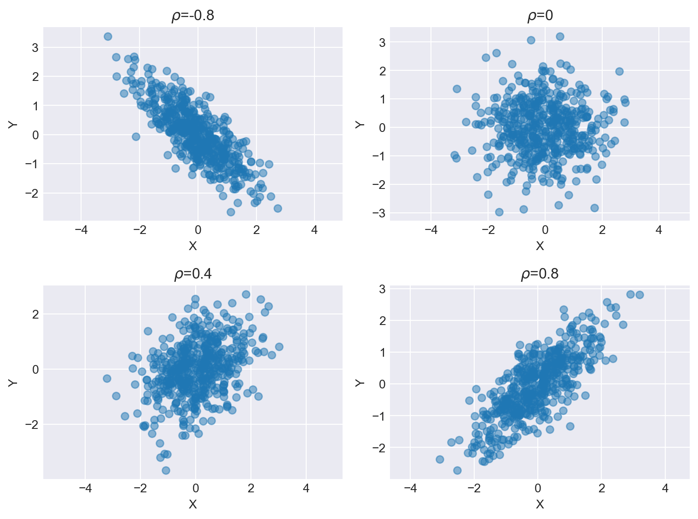
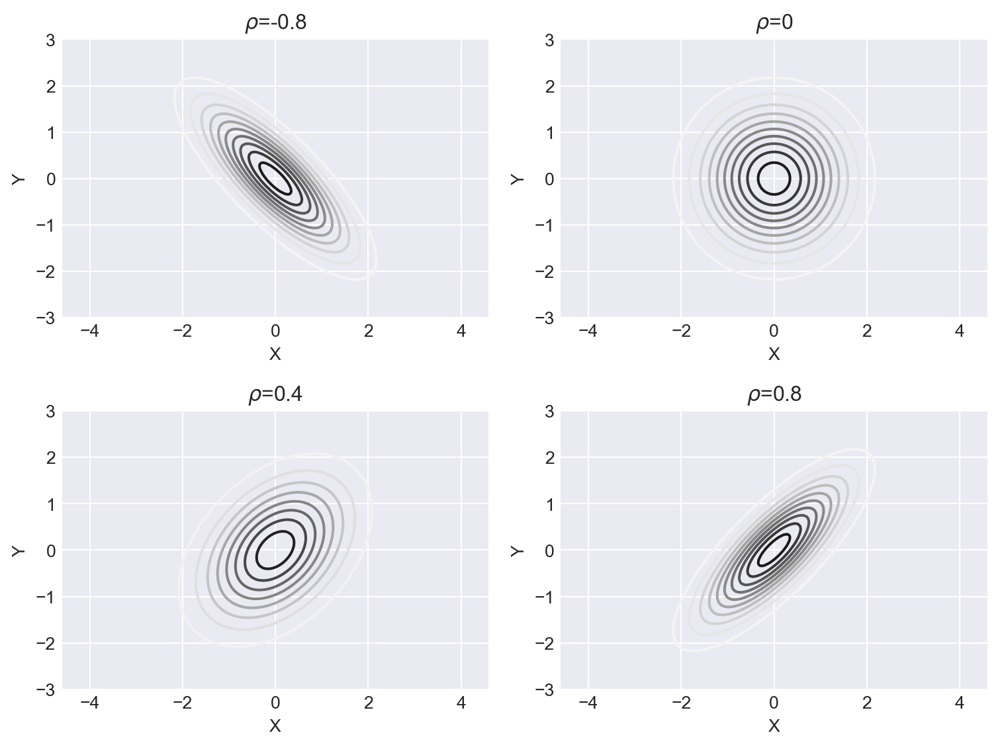

import numpy as np
import matplotlib.pyplot as plt
plt.style.use('seaborn-v0_8-darkgrid')
from scipy.stats import multivariate_normal
from mpl_toolkits.mplot3d import Axes3DAppendix C — Appendix for Chapter 28
C.1 Normal distribution
Let \(Y\sim N(\mu,\sigma^2)\). Then, the probability density function (PDF) of \(Y\) is given by \[ f_Y(y) = \frac{1}{\sigma\sqrt{2\pi}}e^{-\frac{(y-\mu)^2}{2\sigma^2}}, \tag{C.1}\] where \(\mu\) is the mean and \(\sigma^2\) is the variance. The PDF of normal distribution is symmetric about the mean \(\mu\), i.e., \(f(\mu-a)=f(\mu+a)\) for all \(a\in\mathbb{R}\). The PDF has inflection points at \(y=\mu\pm\sigma\). We provide the PDF and CDF plots of the normal distribution with different means and variances in Chapter 11.
Clearly, \(f (y)\geq 0\) for all \(y\in\mathbb{R}\). What about \(\int_{-\infty}^{\infty}f(y)dy=1\)? Define \(I=\int_{-\infty}^{\infty}\frac{1}{\sigma\sqrt{2\pi}}e^{-(y-\mu)^2/(2\sigma^2)}dy\). Set \(z=(y-\mu)/\sigma\implies dz=dy/\sigma\). With this change of variable, \(I\) can be expressed as \[ I=\int_{-\infty}^{\infty}\frac{1}{\sqrt{2\pi}}e^{-z^2/2}dz. \] Because \(I > 0\), it suffices to show that \(I^2 = 1\). Note that \[ \begin{align*} I^2&=\left(\int_{-\infty}^{\infty}\frac{1}{\sqrt{2\pi}}e^{-x^2/2}dx\right)\left(\int_{-\infty}^{\infty}\frac{1}{\sqrt{2\pi}}e^{-y^2/2}dy\right)\\ &=\frac{1}{2\pi}\int_{-\infty}^{\infty}\int_{-\infty}^{\infty}e^{-(x^2+y^2)/2}dxdy. \end{align*} \]
To proceed, we will use the polar coordinate transformation. Set \(x=r\cos(\theta)\) and \(y=r\sin(\theta)\). Then, \(x^2+y^2=r^2\cos^2(\theta)+r^2\sin^2(\theta)=r^2\). The Jacobian of the transformation from \((x,y)\) space to \((r,\theta)\) space is \(r\). Then, we have \[ \begin{align*} I^2&=\frac{1}{2\pi}\int_{0}^{2\pi}\int_{0}^{\infty}e^{-r^2/2}rdrd\theta=\frac{1}{2\pi}\int^{2\pi}_{0}\left(-e^{-r^2/2}\bigg|^{\infty}_{0}\right)d\theta\\ &=\frac{1}{2\pi}\int^{2\pi}_{0}d\theta=1. \end{align*} \]
C.2 Moment-generating function
Definition C.1 (Moments) The \(k\)th moment of a random variable \(Y\) is defined as \(\mathbb{E}(Y^k)\) and is denoted by \(\mu_k'\). The \(k\)th central moment of \(Y\) is defined as \(\mathbb{E}((Y - \mu)^k)\) and is denoted by \(\mu_k\).
Definition C.2 (Moment-generating function) The moment-generating function \(M_Y(t)\) of a random variable \(Y\) is defined as \(M_Y(t) = \E\left(e^{tY} \right)\). It exists if there is a positive constant \(b\) such that \(M_Y(t)\) is finite for \(|t| \leq b\).
The moment generating function can be used to find the moments of a random variable. The following theorem shows that the \(k\)th moment of a random variable can be obtained by differentiating its moment-generating function \(k\) times and evaluating it at \(t=0\).
Theorem C.1 If \(M_Y(t)\) exists, then for any positive integer \(k\), we have \[ \begin{align*} \frac{d^kM_Y(t)}{dt^k}\bigg|_{t=0}=M_Y^{(k)}(0)=\mu^{'}_k. \end{align*} \]
Proof (Proof of Theorem C.1). Let \(f\) be the PDF of \(Y\). Then, for any integer \(k\geq0\), we have \[ \begin{align*} \frac{d^kM_Y(t)}{dt^k}&=\frac{d^k}{dt^k}\E\left(e^tY \right)=\frac{d^k}{dt^k}\int e^{ty}f(y)\text{d}y=\int\frac{d^k}{dt^k}e^{ty}f(y)\text{d}y\\ &=\int y^ke^{ty}f(y)\text{d}y=\E\left(Y^ke^{tY}\right). \end{align*} \] Thus, \[ \frac{d^kM_Y(t)}{dt^k}\bigg|_{t=0}=M_Y^{(k)}(0)=\E\left(Y^ke^{0\cdot Y}\right)=\E\left(Y^k\right)=\mu^{'}_k. \]
Theorem C.2 (Moment-generating function of normal distribution) Let \(Y\sim N(\mu,\sigma^2)\). Then, the moment-generating function of \(Y\) is given by \[ M_Y(t) = e^{\mu t + \frac{\sigma^2 t^2}{2}}. \]
Proof (Proof of Theorem C.2). We can express \(M_Y(t)\) as \[ \begin{align*} M_Y(t)=\E(e^{tY})=\int_{-\infty}^{\infty}e^{ty}\frac{1}{\sigma\sqrt{2\pi}}e^{-\frac{1}{2}\left(\frac{y-\mu}{\sigma}\right)^2}dy=\frac{1}{\sigma\sqrt{2\pi}}\int_{-\infty}^{\infty}e^{ty-\frac{1}{2}\left(\frac{y-\mu}{\sigma}\right)^2}dy. \end{align*} \] Define \(b=ty-\frac{1}{2}\left(\frac{y-\mu}{\sigma}\right)^2\). Then, we can express \(b\) as \[ \begin{align*} b&=ty-\frac{1}{2\sigma^2}\left(y^2-2\mu y+\mu^2\right)\\ &=-\frac{1}{2\sigma^2}\left(y^2-2\mu y-2\sigma^2ty+\mu^2\right)\\ &=-\frac{1}{2\sigma^2}\left(y^2-2(\mu +\sigma^2t)y+\mu^2\right)\\ &=-\frac{1}{2\sigma^2}\left(y^2-2(\mu +\sigma^2t)y+(\mu +\sigma^2t)^2-(\mu +\sigma^2t)^2+\mu^2\right)\\ &=-\frac{1}{2\sigma^2}\left(y-(\mu+\sigma^2t)\right)^2+\frac{1}{2\sigma^2}\left((\mu+\sigma^2t)^2-\mu^2\right)\\ &=-\frac{1}{2\sigma^2}\left(y-c_1\right)^2+\frac{1}{2\sigma^2}\left(\mu^2+2\mu\sigma^2t+\sigma^4t^2-\mu^2\right)\\ &=-\frac{1}{2\sigma^2}\left(y-c_1\right)^2+\mu t+\sigma^2t^2/2\\ &=-\frac{1}{2\sigma^2}\left(y-c_1\right)^2+c_2 \end{align*} \] where \(c_1=(\mu+\sigma^2t)\) and \(c_2=\mu t+\sigma^2t^2/2\). Thus, we can express \(M_Y(t)\) as \[ \begin{align*} M_Y(t)&=\frac{1}{\sigma\sqrt{2\pi}}\int_{-\infty}^{\infty}e^{b}dy=\frac{1}{\sigma\sqrt{2\pi}}\int_{-\infty}^{\infty}e^{-\frac{1}{2\sigma^2}\left(y-c_1\right)^2+c_2}dy\\ &=e^{c_2}\int_{-\infty}^{\infty}\underbrace{\frac{1}{\sigma\sqrt{2\pi}}e^{-\frac{1}{2\sigma^2}\left(y-c_1\right)^2}}_{ N(c_1,\sigma^2)}dy=e^{c_2}=e^{\mu t+\sigma^2t^2/2}. \end{align*} \]
Example C.1 Using Theorem C.2, we can find the moments of a random variable that has a normal distribution. For example, the first moment is given by \[ \begin{align*} \mu^{'}_1&=\frac{dM_Y(t)}{dt}\bigg|_{t=0}=\frac{d}{dt}\left(e^{\mu t+\sigma^2t^2/2}\right)\bigg|_{t=0}\\ &=\frac{d}{dt}\left(e^{\mu t}\right)\bigg|_{t=0}+\frac{d}{dt}\left(e^{\sigma^2t^2/2}\right)\bigg|_{t=0}\\ &=\mu e^{\mu t}\bigg|_{t=0}+\sigma^2t e^{\sigma^2t^2/2}\bigg|_{t=0}\\ &=\mu+\sigma^2\cdot0= \mu. \end{align*} \] The second moment is given by \[ \begin{align*} \mu^{'}_2&=\frac{d^2M_Y(t)}{dt^2}\bigg|_{t=0}=\frac{d^2}{dt^2}\left(e^{\mu t+\sigma^2t^2/2}\right)\bigg|_{t=0}\\ &=\frac{d^2}{dt^2}\left(e^{\mu t}\right)\bigg|_{t=0}+\frac{d^2}{dt^2}\left(e^{\sigma^2t^2/2}\right)\bigg|_{t=0}\\ &=\mu^2 e^{\mu t}\bigg|_{t=0}+\sigma^2 e^{\sigma^2t^2/2}\bigg|_{t=0}+\sigma^2t^2 e^{\sigma^2t^2/2}\bigg|_{t=0}\\ &=\mu^2+\sigma^2\cdot1+\sigma^2\cdot0= \mu^2+\sigma^2. \end{align*} \]
Example C.2 (Central moments of normal distribution) Since the PDF of the normal distribution is symmetric about the mean \(\mu\), we have \(\mu_k=0\) for all odd \(k\). The fourth central moment is \(3\sigma^4\). The even central moments are given by \[ \begin{align*} \mu_k=\E(Y-\mu)^k=\frac{k!}{2^{k/2}(k/2)!}\sigma^k. \end{align*} \]
C.3 Characteristic function
To introduce the characteristic function of a random variable, we first recall some basic results from complex numbers. The imaginary unit is denoted by \(i\), where \(i^2=-1\). A complex number \(z\) is a number of the form \(z=a+ib\), where \(a\) and \(b\) are real numbers. The number \(a\) is called the real part of \(z\) and \(b\) is called the imaginary part of \(z\). The modulus (or absolute value) of a complex number \(z=a+ib\) is defined as \(|z|=\sqrt{a^2+b^2}\). In particular, if \(z=ib\), then \(|z|=|b|\). The addition and multiplication of two complex numbers \(z_1=a+ib\) and \(z_2=c+id\) are defined as \[ \begin{align*} &z_1+z_2=(a+c)+i(b+d),\\ &z_1z_2=(ac-bd)+i(ad+bc). \end{align*} \]
The complex conjugate of a complex number \(z=a+ib\) is defined as \(\overline{z}=a-ib\). Note that \(z\overline{z}=a^2+b^2\). The exponential function can be extended to complex numbers. Euler’s formula states that for any real number \(x\), we have \(e^{ix}=\cos(x)+i\sin(x)\). Note that \(|e^{ix}|=1\) for all real numbers \(x\).
Definition C.3 (Characteristic function) The characteristic function of the random variable \(Y\), denoted by \(\varphi_Y(t)\), is defined as \[ \varphi_Y(t) = \E\left(e^{itY} \right), \] for \(t\in\mathbb{R}\).
Theorem C.3 (Properties of characteristic function) Let \(Y\) be a random variable with the characteristic function \(\varphi_Y(t)\). Then, the following properties hold:
- \(\varphi_Y(0)=1\).
- \(|\varphi_Y(t)|\leq 1\) for all real numbers \(t\).
- \(\varphi_Y(t)\) is uniformly continuous.
- If \(Y_1,Y_2,\ldots,Y_n\) are independent random variables, then the characteristic function of \(S_n=Y_1+Y_2+\cdots+Y_n\) is given by \(\varphi_{S_n}(t)=\varphi_{Y_1}(t)\varphi_{Y_2}(t)\cdots\varphi_{Y_n}(t)\).
Proof (Proof of Theorem C.3).
- We have \(\varphi_Y(0)=\E(e^{i\cdot0\cdot Y})=\E(1)=1\).
- Using the triangle inequality, we have \[ |\varphi_Y(t)|=|\E(e^{itY})|\leq \E(|e^{itY}|)=\E(1)=1, \] where we use the fact that \(|e^{ix}|=1\) for all real numbers \(x\).
- For any real numbers \(t\) and \(h\), we have \[ \begin{align*} |\varphi_Y(t+h)-\varphi_Y(t)|&= |\E(e^{i(t+h)Y})-\E(e^{itY})|=|\E(e^{itY}(e^{ihY}-1))|\\ &\leq \E(|e^{itY}||1-e^{ihY}|)\\ &=\E(|1-e^{ihY}|). \end{align*} \] Note that \(\lim_{h\to0}|1-e^{ihY}|=0\) for all \(Y\). Also, \(|1-e^{ihY}|\leq|1|+|e^{ihY}|= 2\). Then, by the dominated convergence theorem, we can interchange the limit and expectation to obtain \[ \lim_{h\to0}|\varphi_Y(t+h)-\varphi_Y(t)|\leq \lim_{h\to0}\E(|1-e^{ihY}|)=\E(\lim_{h\to0}|1-e^{ihY}|)=0. \] Let \(\epsilon>0\) be given. Then, there exists a \(\delta>0\) such that if \(|h|<\delta\), then \(|\varphi_Y(t+h)-\varphi_Y(t)|<\epsilon\) for all \(t\). This shows that \(\varphi_Y(t)\) is uniformly continuous.
- The characteristic function of \(S_n\) is given by \[ \begin{align*} \varphi_{S_n}(t)&=\E(e^{itS_n})=\E\left(e^{it(Y_1+Y_2+\cdots+Y_n)}\right)\\ &=\E\left(e^{itY_1}e^{itY_2}\cdots e^{itY_n}\right)=\E(e^{itY_1})\E(e^{itY_2})\cdots \E(e^{itY_n})\\ &=\varphi_{Y_1}(t)\varphi_{Y_2}(t)\cdots\varphi_{Y_n}(t), \end{align*} \] where the fourth equality follows from the independence of \(Y_1,Y_2,\ldots,Y_n\).
Theorem C.4 Let \(Y\) be a random variable with \(\E(|Y|)<\infty\). Then, its characteristic function \(\varphi_Y(t)\) is continuously differentiable with respect to \(t\) and \[ \frac{d\varphi_Y(t)}{dt}=i\E\left(Ye^{itY}\right). \]
Proof (Proof of Theorem C.4). For any real numbers \(t\) and \(h\), we consider the difference quotient at \(t\): \[ \begin{align*} \lim_{h\to0}\frac{\varphi_Y(t+h)-\varphi_Y(t)}{h}&=\lim_{h\to0}\frac{\E(e^{i(t+h)Y})-\E(e^{itY})}{h}\\ &=\lim_{h\to0}\E\left(e^{itY}\frac{(e^{ihY}-1)}{h}\right). \end{align*} \] Let \(g_h(Y)=e^{itY}\frac{(e^{ihY}-1)}{h}\). Note that \(\lim_{h\to0}g_h(Y)=iYe^{itY}\) for all \(t\). Also, we have \[ |g_h(Y)|=\left|e^{itY}\frac{(e^{ihY}-1)}{h}\right|\leq |e^{itY}|\left|\frac{e^{ihY}-1}{h}\right|. \] Since \(|e^{ix}-1|=|\int_0^x ie^{iu}du|\leq \int_0^x |ie^{iu}|du=\int_0^x du\leq |x|\), we have \[ |g_h(Y)|\leq |e^{itY}||Y|=|Y|. \] Since \(\E(|Y|)<\infty\), by the dominated convergence theorem, we can interchange the limit and expectation to obtain \[ \lim_{h\to0}\E(g_h(Y))=\E\left(\lim_{h\to0}g_h(Y)\right)=\E(iYe^{itY})=i\E(Ye^{itY}). \] Thus, we have \[ \frac{d\varphi_Y(t)}{dt}=i\E\left(Ye^{itY}\right). \] Finally, we can resort to the argument used in the proof of part 3 of Theorem C.3 to show that \(\frac{d\varphi_Y(t)}{dt}\) is continuous.
We can use Theorem C.4 to derive the Taylor series expansion of the characteristic function \(\varphi_Y(t)\) around \(t=0\). Assume that \(\E(|Y|^k)<\infty\), where \(k\) is a positive integer. Then, we have \[ \varphi_Y(t)=\sum_{j=0}^{k}\frac{(it)^j}{j!}\mu^{'}_j+o(t^k), \tag{C.2}\] where \(\mu^{'}_j=\E(Y^j)\) is the \(j\)th moment of \(Y\), and \(o(t^k)\) is a term such that \(\lim_{t\to0}o(t^k)/t^k=0\).
Example C.3 (Characteristic function of normal distribution) Let \(Y\sim N(\mu,\sigma^2)\). Then, the characteristic function of \(Y\) is given by \[ \varphi_Y(t)=e^{i\mu t-\sigma^2t^2/2}. \]
In particular, if \(Z\sim N(0,1)\), then \(\varphi_Z(t)=e^{-t^2/2}\).
C.4 The proof of the central limit theorem
The central limit theorem introduced in Chapter 27 is known as the Lindeberg-Levy central limit theorem. Its proof is based on the convergence of characteristic functions. Therefore, we first state the following result, known as Levy’s continuity theorem, which connects the convergence in distribution to the pointwise convergence of characteristic functions.
Theorem C.5 (Levy’s continuity theorem) Let \(\{Y_n\}\) be a sequence of random variables with characteristic functions \(\{\varphi_{Y_n}(t)\}\) and \(Y\) be a random variable with characteristic function \(\varphi_Y(t)\). Then, \(Y_n\) converges in distribution to \(Y\) if and only if \(\varphi_{Y_n}(t)\) converges to \(\varphi_Y(t)\) for all real numbers \(t\).
Proof (Proof of Theorem C.5). See Theorem 2.13 in Vaart (1998).
Below, we use Theorem C.5 to prove the central limit theorem introduced in Chapter 27.
Proof (Proof of Theorem 27.14). Define the standardized random variable \(Z_i=\frac{Y_i-\mu_Y}{\sigma_Y}\) for \(i=1,2,\ldots,n\). Then, \(\E(Z_i)=0\) and \(\text{var}(Z_i)=1\). Let \(\varphi_{Z_i}(t)\) be the characteristic function of \(Z_i\). Using Equation C.2, we can determine the Taylor series expansion of \(\varphi_{Z_i}(t)\) around \(t=0\) as \[ \varphi_{Z_i}(t)=1-\frac{t^2}{2}+o(t^2). \]
Define \(S_n=\sum_{i=1}^{n}Z_i\). Note that \[ \frac{\bar{Y}-\mu_{\bar{Y}}}{\sigma_{\bar{Y}}}= \frac{1}{\sqrt{n}}\sum_{i=1}^{n}\frac{(Y_i-\mu_Y)}{\sigma_Y}=\frac{1}{\sqrt{n}}\sum_{i=1}^{n}Z_i=\frac{S_n}{\sqrt{n}}. \]
Then, the characteristic function of \(S_n/\sqrt{n}\) is given by \[ \varphi_{S_n/\sqrt{n}}(t)=\left(\varphi_{Z_i}(t/\sqrt{n})\right)^n=\left(1-\frac{t^2}{2n}+o\left(\frac{t^2}{n}\right)\right)^n \] Then, as \(n\to\infty\), we have \[ \lim_{n\to\infty}\varphi_{S_n/\sqrt{n}}(t)=\lim_{n\to\infty}\left(1-\frac{t^2}{2n}+o\left(\frac{t^2}{n}\right)\right)=e^{-t^2/2}. \]
By Example C.3, \(\varphi_Z(t)=e^{-t^2/2}\) is the characteristic function of the standard normal distribution. Therefore, by Theorem C.5, \(S_n/\sqrt{n}\) converges in distribution to \(N(0,1)\) as \(n\to\infty\).
C.5 The proof of Slutsky’s theorem
In this section, we provide the proof of Slutsky’s theorem introduced in Chapter 27. Let \(\{X_n\}\) and \(\{Y_n\}\) be two sequences of random variables. Assume that \(X_n\) converges in distribution to \(X\) and \(Y_n\) converges in probability to a constant \(a\). Then, Slutsky’s theorem states that \(X_n+Y_n\) converges in distribution to \(X+a\), \(X_nY_n\) converges in distribution to \(aX\), and \(X_n/Y_n\) converges in distribution to \(X/a\) if \(a\neq0\). There are alternative proofs of Slutsky’s theorem. Below, we use a version based on the convergence of distribution functions.
C.5.1 Proof of part 1
Let \(F_{X_n+Y_n}\) be the CDF of \(X_n+Y_n\), \(F_{X_n}\) the CDF of \(X_n\), and \(F_X\) the CDF of \(X\). Let \(t\) be the continuity point of \(F_{X+a}\). Then, \[ F_{X+a}(t)=P(X+a\leq t)=P(X\leq t-a)=F_X(t-a). \] Thus, \(t-a\) is a continuity point of \(F_X\). For any \(\varepsilon>0\), we have \[ \begin{align*} F_{X_n+Y_n}(t)&=P(X_n+Y_n\leq t)=P(X_n+Y_n\leq t,|Y_n-a|<\varepsilon)\\ &+P(X_n+Y_n\leq t,|Y_n-a|\geq\varepsilon)\\ &\leq P(X_n+Y_n\leq t,|Y_n-a|<\varepsilon)+P(|Y_n-a|\geq\varepsilon), \end{align*} \tag{C.3}\] where the inequality follows from the fact that \(\{X_n+Y_n\leq t,|Y_n-a|\geq\varepsilon\}\subseteq \{|Y_n-a|\geq\varepsilon\}\). Thus, we have \[ \begin{align*} F_{X_n+Y_n}(t)-P(|Y_n-a|\geq\varepsilon)\leq P(X_n+Y_n\leq t,|Y_n-a|<\varepsilon). \end{align*} \tag{C.4}\] Note that if \(|Y_n-a|<\varepsilon\), then \(a-\varepsilon<Y_n<a+\varepsilon\). Thus, on the event \(\{|Y_n-a|<\varepsilon\}\), we have \[ \begin{align*} &\{X_n\leq t-(a+\varepsilon),|Y_n-a|<\varepsilon\}\\ &\subseteq\{X_n+Y_n\leq t,|Y_n-a|<\varepsilon\}\\ &\subseteq \{X_n\leq t-(a-\varepsilon), |Y_n-a|<\varepsilon\}. \end{align*} \tag{C.5}\]
From the left-hand side of Equation C.5, we obtain \[ \begin{align*} &F_{X_n}(t-(a+\varepsilon))=P(X_n\leq t-(a+\varepsilon))\\ &=P(X_n\leq t-(a+\varepsilon),|Y_n-a|<\varepsilon)+P(X_n\leq t-(a+\varepsilon),|Y_n-a|\geq\varepsilon)\\ &\leq P(X_n\leq t-(a+\varepsilon),|Y_n-a|<\varepsilon)+P(|Y_n-a|\geq\varepsilon)\\ &\leq P(X_n+Y_n\leq t)+P(|Y_n-a|\geq\varepsilon)\\ &=F_{X_n+Y_n}(t)+P(|Y_n-a|\geq\varepsilon), \end{align*} \tag{C.6}\] where the last inequality follows from Equation C.5. Similarly, from the right-hand side of the inequality in Equation C.5, we have \[ \begin{align*} &F_{X_n}(t-(a-\varepsilon)=P(X_n\leq t-(a-\varepsilon))\\ &=P(X_n\leq t-(a-\varepsilon),|Y_n-a|<\varepsilon)+P(X_n\leq t-(a-\varepsilon),|Y_n-a|\geq\varepsilon)\\ &\geq P(X_n\leq t-(a-\varepsilon),|Y_n-a|<\varepsilon)\\ &\geq P(X_n+Y_n\leq t,|Y_n-a|<\varepsilon)\\ &=F_{X_n+Y_n}(t)-P(|Y_n-a|\geq\varepsilon)\\ \end{align*} \tag{C.7}\] where the last equality follows from Equation C.4. Then, combining Equation C.6 and Equation C.7 yields
\[ F_{X_n}(t-(a-\varepsilon))-P(|Y_n-a|\geq\varepsilon)\leq F_{X_n+Y_n}(t)\leq F_{X_n}(t-(a+\varepsilon))+P(|Y_n-a|\geq\varepsilon). \]
Since \(X_n\xrightarrow{d}X\), we have \(F_{X_n}\to F_X\) at the continuity points of \(F_X\), and since \(Y_n\xrightarrow{p}a\), we have \(P(|Y_n-a|\geq\varepsilon)\to0\). Thus, taking the limit on both sides of the above inequality yields \[ F_X(t-(a-\varepsilon))\leq \liminf_{n\to\infty}F_{X_n+Y_n}(t)\leq \limsup_{n\to\infty}F_{X_n+Y_n}(t)\leq F_X(t-(a+\varepsilon)). \]
Finally, letting \(\varepsilon\to0\) and using the continuity of \(F_X\) at \(t-a\), we obtain \[ \lim_{n\to\infty}F_{X_n+Y_n}(t)=F_X(t-a). \]
C.5.2 Proof of part 2
First, we assume that \(a\ne0\). Let \(t\) be the continuity point of \(F_{aX}\). Choose \(\varepsilon\in(0, |a|/2)\). Then, as in the proof of part 1, we split \(F_{X_nY_n}(t)\) into two parts: \[ \begin{align*} F_{X_nY_n}(t)&=P(X_nY_n\leq t)=P(X_nY_n\leq t,|Y_n-a|<\varepsilon)\\ &+P(X_nY_n\leq t,|Y_n-a|\geq\varepsilon)\\ &\leq P(X_nY_n\leq t,|Y_n-a|<\varepsilon)+P(|Y_n-a|\geq\varepsilon). \end{align*} \]
On the event \(\{|Y_n-a|<\varepsilon\}\), the sign of \(Y_n\) is the same as that of \(a\) and \(a-\varepsilon<Y_n<a+\varepsilon\). Then, on the event \(\{|Y_n-a|<\varepsilon\}\), we have \[ \begin{align*} &\{X_n\leq t/(a+\varepsilon), |Y_n-a|<\varepsilon\}\\ &\subseteq\{X_nY_n\leq t,|Y_n-a|<\varepsilon\}\\ &\subseteq \{X_n\leq t/(a-\varepsilon), |Y_n-a|<\varepsilon\}. \end{align*} \tag{C.8}\]
Similar to the proof of part 1, we can use Equation C.8 to show that \[ F_{X_n}(t/(a-\varepsilon))-P(|Y_n-a|\geq\varepsilon)\leq F_{X_nY_n}(t)\leq F_{X_n}(t/(a+\varepsilon))+P(|Y_n-a|\geq\varepsilon). \]
Let \(n\to\infty\). Since \(X_n\xrightarrow{d}X\) and \(Y_n\xrightarrow{p}a\), we have \[ F_X(t/(a-\varepsilon))\leq \liminf_{n\to\infty}F_{X_nY_n}(t)\leq \limsup_{n\to\infty}F_{X_nY_n}(t)\leq F_X(t/(a+\varepsilon)). \] Finally, letting \(\varepsilon\to0\) and using the continuity of \(F_X\) at \(t/a\), we obtain \[ \lim_{n\to\infty}F_{X_nY_n}(t)=F_X(t/a)=P(X\leq t/a)=P(aX\leq t)=F_{aX}(t). \]
If \(a=0\), it is enough to show that \(X_nY_n\xrightarrow{p}0\). Since \(X_n\xrightarrow{d}X\), the sequence \(\{X_n\}\) is tight. Thus, for any \(\varepsilon_1>0\), there exists a constant \(M>0\) such that \(P(|X_n|>M)<\varepsilon_1\) for all \(n\). For any \(\varepsilon_2>0\), we have \[ \begin{align*} P(|X_nY_n|>\varepsilon_2)&=P(|X_nY_n|>\varepsilon_2,|X_n|\leq M)+P(|X_nY_n|>\varepsilon_2,|X_n|>M)\\ &\leq P(|Y_n|>\varepsilon_2/M)+P(|X_n|>M). \end{align*} \]
By choosing \(M\) big enough, we can make \(P(|X_n|>M)\) smaller than any given positive number, i.e., \(P(|X_n|>M)<\varepsilon_1\). Since \(Y_n\xrightarrow{p}0\), we have \(P(|Y_n|>\varepsilon_2/M)\to0\) as \(n\to\infty\). Thus, \(\limsup_{n\to\infty}P(|X_nY_n|>\varepsilon_2)\leq\varepsilon_1\). Since \(\varepsilon_1\) can be arbitrarily small, we have \(P(|X_nY_n|>\varepsilon_2)\to0\) as \(n\to\infty\). Therefore, \(X_nY_n\xrightarrow{p}0\).
C.5.3 Proof of part 3
Let \(t\) be the continuity point of \(F_{X/a}\). Choose \(\varepsilon\in(0, |a|/2)\). Then, as in the proof of part 1, we split \(F_{X_n/Y_n}(t)\) into two parts: \[ \begin{align*} F_{X_n/Y_n}(t)&=P(X_n/Y_n\leq t)=P(X_n/Y_n\leq t,|Y_n-a|<\varepsilon)\\ &+P(X_n/Y_n\leq t,|Y_n-a|\geq\varepsilon)\\ &\leq P(X_n/Y_n\leq t,|Y_n-a|<\varepsilon)+P(|Y_n-a|\geq\varepsilon). \end{align*} \]
On the event \(\{|Y_n-a|<\varepsilon\}\), the sign of \(Y_n\) is the same as that of \(a\) and \(a-\varepsilon<Y_n<a+\varepsilon\). Then, on the event \(\{|Y_n-a|<\varepsilon\}\), we have
\[ \begin{align*} &\{X_n\leq t(a-\varepsilon),|Y_n-a|<\varepsilon\}\\ &\subseteq\{X_n/Y_n\leq t,|Y_n-a|<\varepsilon\}\\ &\subseteq \{X_n\leq t/(a+\varepsilon),|Y_n-a|<\varepsilon\}. \end{align*} \tag{C.9}\]
Note that the inequalities are reversed if \(a<0\). Thus, as in the case of part 1, we can use Equation C.9 to show that \[ F_{X_n}(t/(a+\varepsilon))-P(|Y_n-a|\geq\varepsilon)\leq F_{X_n/Y_n}(t)\leq F_{X_n}(t/(a-\varepsilon))+P(|Y_n-a|\geq\varepsilon). \]
Let \(n\to\infty\). Since \(X_n\xrightarrow{d}X\) and \(Y_n\xrightarrow{p}a\), we have \[ F_X(t/(a-\varepsilon))\leq \liminf_{n\to\infty}F_{X_n/Y_n}(t)\leq \limsup_{n\to\infty}F_{X_n/Y_n}(t)\leq F_X(t/(a+\varepsilon)). \] Finally, letting \(\varepsilon\to0\) and using the continuity of \(F_X\) at \(t/a\), we obtain \[ \lim_{n\to\infty}F_{X_n/Y_n}(t)=F_X(t/a)=P(X\leq t/a)=P(X/a\leq t)=F_{X/a}(t). \]
C.6 Bivariate normal distribution
The bivariate normal PDF of \(X\) and \(Y\) is given by \[ f_{X,Y}(x,y)=\frac{1}{2\pi\sigma_X\sigma_Y\sqrt{1-\rho^2}}e^{-\frac{1}{2(1-\rho^2)}\left(\frac{(x-\mu_X)^2}{\sigma_X^2}+\frac{(y-\mu_Y)^2}{\sigma_Y^2}-\frac{2\rho(x-\mu_X)(y-\mu_Y)}{\sigma_X\sigma_Y}\right)}, \] where \(\rho\) is the correlation coefficient between \(X\) and \(Y\). The marginal distributions of \(X\) and \(Y\) are univariate normal distributions: \(X\sim N(\mu_X,\sigma^2_X)\) and \(Y\sim N(\mu_Y,\sigma^2_Y)\).
In Figure C.1, we plot the bivariate normal distribution with \(\mu_X=\mu_Y=0\), \(\sigma_X=\sigma_Y=1\), and \(\rho=0.5\). The 3D plot shows the joint PDF of \(X\) and \(Y\).
# 3D plot of bivariate normal distribution
# Parameters
mu = [0, 0] # mean
sigma = [[1, 0.5], [0.5, 1]] # covariance matrix
x = np.linspace(-3, 3, 100)
y = np.linspace(-3, 3, 100)
X, Y = np.meshgrid(x, y)
pos = np.dstack((X, Y))
rv = multivariate_normal(mu, sigma)
# Create a 3D plot
fig = plt.figure(figsize=(8, 4))
ax = fig.add_subplot(111, projection='3d')
ax.plot_surface(X, Y, rv.pdf(pos), cmap='viridis', linewidth=1, antialiased=True,rstride=3, cstride=3)
ax.set_xlabel('X-axis')
ax.set_ylabel('Y-axis')
#ax.set_zlabel('Probability Density')
#ax.set_title('Bivariate Normal Distribution')
# Adjust the limits, ticks and view angle
ax.set_zlim(0, 0.2)
ax.set_zticks(np.linspace(0, 0.2, 5))
ax.view_init(30, -27)
plt.show()
In Figure C.2, we plot the scatter plots of random draws obtained from the bivariate normal distributions that have different correlation coefficients. The correlation coefficient \(\rho\) takes values from \(\{-0.8, 0, 0.4, 0.8\}\). The scatter plots show the relationship between \(X\) and \(Y\) for different values of \(\rho\). As \(\rho\) gets larger in absolute value, the points in the scatter plot become more aligned along the line \(y=x\) or \(y=-x\).
# Create a 2x2 subplot for the plots
fig, axes = plt.subplots(2, 2, figsize=(8, 6))
# Define the mean vector
mean_vector = np.array([0, 0])
# Define the values for rho
rho = [-0.8, 0, 0.4, 0.8]
# Iterate over the rho values and corresponding subplot axes
for ax, rho in zip(axes.flatten(), rho):
# Define the covariance matrix
cov_matrix = np.array([[1, rho], [rho, 1]])
# Generate random samples from the multivariate normal distribution
samples = np.random.multivariate_normal(mean_vector, cov_matrix, size=500)
# Plot the samples
ax.scatter(samples[:, 0], samples[:, 1], alpha=0.5)
ax.set_title(f"$\\rho$={rho}")
ax.set_xlabel("X")
ax.set_ylabel("Y")
ax.axis('equal')
# Adjust layout for better spacing
plt.tight_layout()
plt.show()
In Figure C.3, we plot the contour plots of the bivariate normal distributions that have different correlation coefficients. The contour plots show the level curves of the bivariate normal distribution for different values of \(\rho\). Figure C.3 shows that as \(\rho\) gets larger in absolute value, the contours stretch along the line \(y=x\) or \(y=-x\).
# Create a 2x2 subplot for the plots
fig, axes = plt.subplots(2, 2, figsize=(8, 6))
# Define the mean vector
mean_vector = np.array([0, 0])
# Define the values for rho
rho = [-0.8, 0, 0.4, 0.8]
# Iterate over the rho values and corresponding subplot axes
for ax, rho in zip(axes.flatten(), rho):
# Define the covariance matrix
cov_matrix = np.array([[1, rho], [rho, 1]])
# Create a grid of points
x = np.linspace(-3, 3, 100)
y = np.linspace(-3, 3, 100)
X, Y = np.meshgrid(x, y)
pos = np.dstack((X, Y))
# Calculate the probability density function
rv = multivariate_normal(mean_vector, cov_matrix)
Z = rv.pdf(pos)
# Plot the contour
ax.contour(X, Y, Z, levels=10)
ax.set_title(f"$\\rho$={rho}")
ax.set_xlabel("X")
ax.set_ylabel("Y")
ax.axis('equal')
# Adjust layout for better spacing
plt.tight_layout()
plt.show()
If \(X\) and \(Y\) are have a joint normal distribution, then the conditional distribution of \(Y\) given \(X=x\) is also a normal distribution: \(Y|X=x\sim N(\mu_{Y|X},\sigma^2_{Y|X})\), where \[ \begin{align*} \mu_{Y|X}&=\mu_Y+\rho\frac{\sigma_Y}{\sigma_X}(x-\mu_X),\\ \sigma^2_{Y|X}&=\sigma^2_Y(1-\rho^2). \end{align*} \]
The conditional distribution of \(X\) given \(Y=y\) is also a normal distribution: \(X|Y=y\sim N(\mu_{X|Y},\sigma^2_{X|Y})\), where \[ \begin{align*} \mu_{X|Y}&=\mu_X+\rho\frac{\sigma_X}{\sigma_Y}(y-\mu_Y),\\ \sigma^2_{X|Y}&=\sigma^2_X(1-\rho^2). \end{align*} \]
In Appendix D, we define the multivariate normal distribution that extends the bivariate normal distribution to \(n\) dimensions.
C.7 Chi-square distribution
The chi-square distribution with \(k\) degrees of freedom is defined as the distribution of the sum of the squares of \(k\) independent standard normal random variables. If \(X\sim\chi^2_k\), then its PDF is given by \[ f_X(x)=\frac{1}{2^{k/2}\Gamma(k/2)}x^{k/2-1}e^{-x/2},\quad x>0. \] where \(\Gamma(\alpha)=\int_{0}^{\infty}t^{\alpha-1}e^{-t}\text{d}t\) is the gamma function.
If \(X\sim\chi^2_k\), then \(\E(X)=k\) and \(\text{var}(X)=2k\). Its moment generating function is given by \(M_X(t)=\left(1-2t\right)^{-k/2}\) for \(t<1/2\).
In Chapter 11, we provide the PDF and CDF plots of the chi-square distribution with \(k=3,4,10\) degrees of freedom. The PDF of the chi-square distribution is right-skewed, and as \(k\) increases, the PDF becomes less skewed and more symmetric. Indeed, if \(X_k\sim\chi^2_k\), then by the central limit theorem introduced in Chapter 27, as \(k\to\infty\), we have \[ \frac{X_k-k}{\sqrt{2k}}\xrightarrow{d}N(0,1). \]
The chi-square distribution is also related to the gamma distribution. The chi-square distribution with \(k\) degrees of freedom is equivalent to the gamma distribution with shape parameter \(k/2\) and scale parameter \(2\). For further details, see the Wikipedia page on the chi-square distribution.
C.8 Student t distribution
Let \(Z\sim N(0,1)\) and \(W\sim\chi^2_{\nu}\). Assume that \(Z\) and \(W\) are independent. Then, the random variable \[ T=\frac{Z}{\sqrt{W/\nu}}, \]
has Student \(t\) distribution with \(\nu\) degrees of freedom, and we write \(T\sim t_{\nu}\). The PDF of \(T\) is given by \[ \begin{align*} f_T(t)= \begin{cases} \frac{\Gamma\left(\frac{\nu+1}{2}\right)}{\sqrt{\nu\pi}\Gamma\left(\frac{\nu}{2}\right)}\frac{1}{\left(1+\frac{t^2}{\nu}\right)^{(\nu+1)/2}},\quad -\infty<t<\infty,\\ 0,\quad\text{otherwise}. \end{cases} \end{align*} \]
The moment-generating function of \(T\) does not exist. The first moment is given by \(\E(T)=0\) and the second moment is given by \(\E(T^2)=\frac{\nu}{\nu-2}\) for \(\nu>2\). The variance is given by \(\text{var}(T)=\frac{\nu}{\nu-2}\) for \(\nu>2\).
In Chapter 11, we provide the PDF and CDF plots of the Student \(t\) distribution with \(\nu=1,10\) degrees of freedom. The PDF of the Student \(t\) distribution is similar to that of the standard normal distribution, but it has heavier tails. As \(\nu\) increases, the PDF of the Student \(t\) distribution approaches that of the standard normal distribution. To see this, we write \(T\) as \[ T=\frac{Z}{\sqrt{W/\nu}}=\frac{Z}{\sqrt{\frac{1}{\nu}\sum_{i=1}^{\nu}X_i^2}}, \] where \(X_1,X_2,\ldots,X_{\nu}\) are independent random variables that have standard normal distributions. By the law of large numbers, \(\frac{1}{\nu}\sum_{i=1}^{\nu}X_i^2\xrightarrow{p}\E(X^2_i)=1\) as \(\nu\to\infty\). Thus, by Slutsky’s theorem introduced in Chapter 27, as \(\nu\to\infty\), we have \[ T\stackrel{d}{\to}Z\sim N(0,1). \]
C.9 F distribution
Let \(W_1\sim\chi^2_{\nu_1}\) and \(W_2\sim\chi^2_{\nu_2}\). Assume that \(W_1\) and \(W_2\) are independent. Then, the random variable defined by \[ F=\frac{W_1/\nu_1}{W_2/\nu_2}, \] has \(F\) distribution with (numerator) \(\nu_1\) and (denominator) \(\nu_2\) degrees of freedom. We write \(F\sim F_{\nu_1,\nu_2}\). If \(U\sim F_{\nu_1,\nu_2}\), then its PDF is given by \[ \begin{align*} f_U(u)=\frac{\Gamma\left(\frac{\nu_1+\nu_2}{2}\right)}{\Gamma\left(\frac{\nu_1}{2}\right)\Gamma\left(\frac{\nu_2}{2}\right)} \left(\frac{\nu_1}{\nu_2}\right)^{\nu_1/2}\frac{u^{\frac{\nu_1}{2}}-1}{\left(1+\frac{\nu_1}{\nu_2}u\right)^{(\nu_1+\nu_2)/2}},\quad u>0. \end{align*} \]
The moment-generating function of \(F\) does not exist. The first moment is given by \(\E(F)=\frac{\nu_2}{\nu_2-2}\) for \(\nu_2>2\). The variance is given by \(\text{var}(F)=\frac{2\nu_2^2(\nu_1+\nu_2-2)}{\nu_1(\nu_2-2)^2(\nu_2-4)}\) for \(\nu_2>4\).
We provide the PDF and CDF plots of the \(F\) distribution with different degrees of freedom in Chapter 11. The PDF of the \(F\) distribution is right-skewed, and as \(\nu_2\) increases, the PDF approaches that of the chi-square distribution. Indeed, we discuss that \(F_{\nu_1,\nu_2}\) converges to \(F_{\nu_1,\infty}=\chi^2_{\nu_1}/\nu_1\) as \(\nu_2\to\infty\). To see this, we write \(F\) as \[ F=\frac{W_1/\nu_1}{W_2/\nu_2}=\frac{W_1/\nu_1}{\frac{1}{\nu_2}\sum_{i=1}^{\nu_2}X_i^2}, \] where \(X_1,X_2,\ldots,X_{\nu_2}\) are independent random variables that have standard normal distributions. By the law of large numbers, \(\frac{W_2}{\nu_2}=\frac{1}{\nu_2}\sum_{i=1}^{\nu_2}X_i^2\xrightarrow{p}\E(X_i^2)=1\) as \(\nu_2\to\infty\). Then, by Slutsky’s theorem introduced in Chapter 27, as \(\nu_2\to\infty\), we have \[ F\stackrel{d}{\to}W_1/\nu_1\sim \chi^2_{\nu_1}/\nu_1. \]